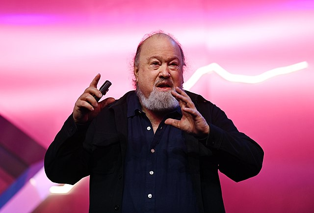
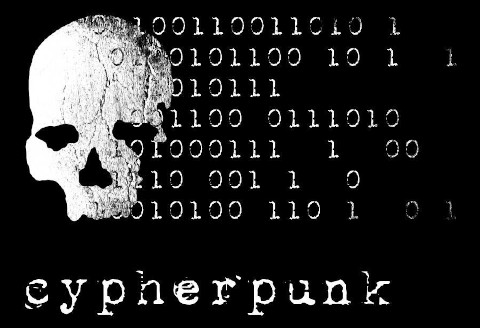

P2-ESDN-02 : Femmes dans l’informatique#
Objectifs#
Liste d’informaticiennes à choix pour les élèves
Les élèves reçoivent une informaticienne :
comprendre les enjeux sociaux cachés derrière l’informaticienne
préparer un exposé sur la personne en suivant le plan proposé
Format#
Une présentation au format Powerpoint/PDF de 5 slides max + 1 slide avec les sources
AUCUNE NOTE N’EST AUTORISÉ PENDANT lA PRÉSENTATION
10 minutes de passage + 5 minutes de questions/réponses
Votre présentation doit se concentrer sur l’enjeu social pas sur la personne. Elle doit permettre à l’ensemble de la classe de pouvoir se forger un avis éclairé. Chaque élément de votre présentation doit être sourcé.
Ce que ne DOIT PAS être la présentation#
une biographie
une liste de faits et/ou de dates en lien avec la personne
Ce que DOIT être la présentation#
Identifier l’enjeu social principal en lien avec la personne
Mettre cet enjeu social en perspective avec les développements du numérique
Mobiliser les concepts techniques en jeu (par exemple : réseau, cryptologie, etc…)
Rechercher le ou les références scientifiques de l’enjeu social considéré
Bibliothèque du gymnase
A rendre sur Moodle#
Présentation powerpoint/PDF
Liste des Hacktivistes, cybermilitants, cybermilitantes et cyberféministes#
L’hacktivisme (mot-valise formé de hacker et activisme) est une forme d’engagement collectif ou individuel dans un but collectif utilisant les compétences en piratage informatique dans le but d’influencer certaines politiques ou choix sociétaux. Un ou une hacktiviste est une personne qui se revendique de l’hacktivisme et qui agit seule ou en groupe
Alexandra Elbakyan#

Scientific knowledge belongs to humanity
(La connaissance scientifique appartient à l’Humanité)
Jude Milhon#

When you’re in cyberspace no one knows what your sex is
(Lorsque vous êtes dans le cyber espace, personne ne connaît votre sexe)
Sarah Jane Plant (Sadie Plant)#

When computers were vast systems of transistors and valves which needed to be coaxed into action, it was women who turned them on. When computers became the miniaturized circuits of silicon chips, it was women who assembled them … when computers were virtually real machines, women wrote the software on which they ran. And when computer was a term applied to flesh and blood workers, the bodies which composed them were female.
(Lorsque les ordinateurs étaient d’immenses systèmes de transistors et de tubes à vide qu’il fallait convaincre à fonctionner, ce sont les femmes qui les ont mis en marche. Quand les ordinateurs sont devenus des circuits miniaturisés de puces de silicium, ce sont les femmes qui les ont assemblés… quand les ordinateurs étaient pratiquement de vraies machines, ce sont les femmes qui ont écrit les logiciels sur lesquels ils fonctionnaient. Et quand l’ordinateur était un terme appliqué aux travailleurs en chair et en os, les corps qui les composaient étaient féminins.)
Judy Wajcman#

Zeros now have a place, and they displace the phallic order of ones.
(Les zéros on désormais leur place, et ils remplacent l’ordre phallique des uns)
Soeur Mary Kenneth Keller#

We’re having an information explosion, and it’s certainly obvious that information is of no use unless it’s available.
(Nous sommes en train d’assister à une explosion d’information, et il est évident que l’information n’est d’aucune utilité à moins d’être disponible)
Richard Matthew Stallman#

If a computational activity is truly important to you, never depend on being able to continue it by means of nonfree software controlled by someone else! That is asking to lose.
(Si une activité informatique est vraiment importante pour vous, ne comptez jamais sur le fait de pouvoir la poursuivre en utilisant un logiciel non libre contrôlé par quelqu’un d’autre ! C’est demander à perdre.)
Lawrence Lessig#

If the Internet teaches us anything, it is that great value comes from leaving core resources in a commons, where they’re free for people to build upon as they see fit
(Si Internet nous enseigne quelque chose, c’est que de grandes valeurs proviennent du fait de laisser les ressources essentielles pour le bien commun, où elles sont libres pour que les gens puissent les utiliser et les développer comme ils le souhaitent.)
Aaron Swartz#

The World’s entier scientific and cultural heritage, published over centuries in books and journals, is increasingly being digitized and locked up by a handful of private corporations
(L’entier du patrimoine scientifique et culturel du monde, publié au fil des siècles dans des livres et des revues, est de plus en plus numérisé et verrouillé par une poignée de sociétés privées.)
John Perry Barlow#
The Internet is the most liberating tool for humanity ever invented, and also the best for surveillance. It’s not one or the other. It’s both.
(Internet est l’outil le plus libérateur jamais inventé pour l’humanité, et aussi le meilleur pour la surveillance. Ce n’est pas l’un ou l’autre. C’est les deux.)
Linus Torvalds#
If Microsoft ever does applications for Linux it means I’ve won.
(Si Microsoft dévelope une fois des applications pour Linux, cela signifie que j’ai gagné)
Philip Zimmermann#

If privacy is outlawed, only outlaws will have privacy
(Si la vie privée est interdite, cela veut dire que seuls les hors-la-loi auront une vie privée)
David Chaum#

If Satoshi is the father of Bitcoin, David Chaum is most definitely its grandfather
(Si Satoshi est le père du Bitcoin, alors David Chaum est très certainement son grand-père)
Jimmy Wales (et Larry Sanger)#
Imagine a world in which every single person on the planet is given free access to the sum of all human knowledge. That’s what we’re doing.
(Imaginez un monde dans lequel chaque personne sur la planète a un accès gratuit à la somme de toute la connaissance humaine. C’est ce que nous faisons)
The cypherpunks : Eric Hughes, Tim May et John Gilmore#

We cannot expect governments, corporations, or other large, faceless organizations to grant us privacy out of their beneficence. It is to their advantage to speak of us, and we should expect that they will speak. To try to prevent their speech is to fight against the realities of information. Information does not just want to be free, it longs to be free. Information expands to fill the available storage space. Information is Rumor’s younger, stronger cousin; Information is fleeter of foot, has more eyes, knows more, and understands less than Rumor.
(Nous ne pouvons pas nous attendre à ce que les gouvernements, les entreprises ou d’autres grandes organisations sans visage nous accordent la vie privée par bienveillance. C’est à leur avantage de parler de nous, et nous devrions nous attendre à ce qu’ils parlent. Essayer d’empêcher leur discours, c’est lutter contre les réalités de l’information. L’information ne veut pas seulement être libre, elle aspire à être libre. L’information s’étend pour remplir l’espace de stockage disponible. L’information est le cousin plus jeune et plus fort de la rumeur ; l’information est plus rapide, a plus d’yeux, sait plus de choses et comprend moins que la rumeur.)
The Pirate Bay : Gottfrid Svartholm, Fredrik Neij et Peter Sunde#

All communication on today’s networks are being monitored by government agencies and private companies.
(Toutes les communications sur les réseaux d’aujourd’hui sont surveillées par des agences gouvernementales et des entreprises privées.)
The cult of the Dead Cow : Grandmaster Ratte’ , Franken Gibe et Sid Vicious#

It wasn’t just that politicians needed to think more about technology and its unique multidisciplinary role in the world. Those in technology needed to think a lot more about politics.
(Ce n’était pas seulement que les politiciens devaient réfléchir davantage à la technologie et à son rôle multidisciplinaire unique dans le monde. Ceux qui travaillent dans la technologie devaient aussi beaucoup plus réfléchir à la politique.)
CCC : Wau Holland (et Steffen Wernéry)#

Technologie muß man nicht bekämpfen, sondern beherrschen.
(La technologie ne doit pas être combattue, mais maîtrisée.)